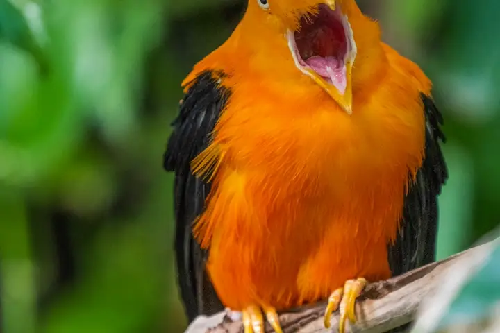
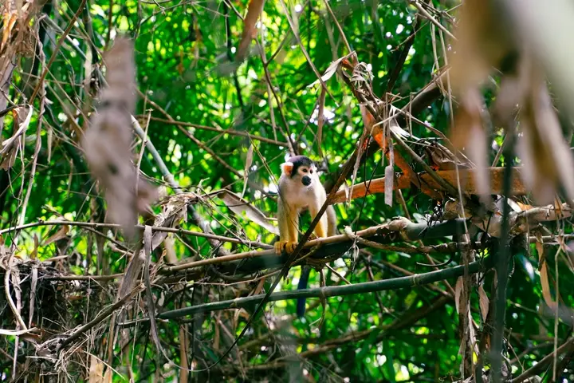
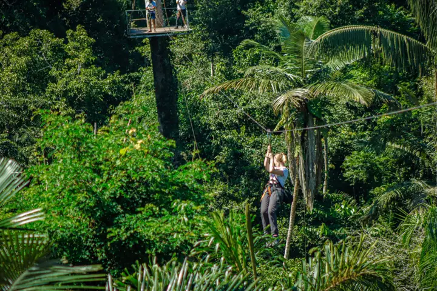

Manu 4 días / 3 noches
- Duración4 días / 3 noches
- DificultadModerada
- Alturade 3,600 m a selva baja



Resumen
De Cusco a la Amazonía por tierra: el bosque nublado del gallito de las rocas, el río Alto Madre de Dios, el lago Machuhuasi en balsa y una collpa de loros.
Lugares que visitarás
- Paucartambo
- Ninamarca
- Bosque nublado
- Pilcopata
- Río Alto Madre de Dios
- Lago Machuhuasi
- Collpa de loros
- Laguna Maravilla
Alojamiento
Noche 1: albergue en Pilcopata, con duchas y baños. Noches 2 y 3: albergue en la selva, con baño privado y ducha.
Itinerario Programa completo
01Día 1 · Cusco – Paucartambo – bosque nublado – Pilcopata
- Recojo en tu hotel de Cusco entre las 5:30 y las 6:00 a. m.
- Subida a la zona alta de Paucartambo, con visita a las chullpas (torres funerarias) de Ninamarca.
- Paso por Ajanaco, a 3,600 m, y bajada por el bosque nublado, lleno de orquídeas, heliconias y helechos primitivos.
- Parada para intentar ver el ritual de apareamiento del gallito de las rocas. También se pueden ver el pájaro paraguas amazónico, trogones, quetzales u oropéndolas; en esta zona vive el oso de anteojos.
- Por la tarde, llegada a Pilcopata y noche en el albergue.
02Día 2 · Atalaya – río Alto Madre de Dios – lago Machuhuasi
- Desayuno y caminata por la selva: una plantación de coca, aves, plantas y monos.
- En el puerto de Atalaya, bote a motor por el río Alto Madre de Dios, con una parada para caminar por un sendero y bañarse en aguas termales.
- Llegada al albergue y almuerzo.
- Por la tarde, paseo en balsa por el lago Machuhuasi: con suerte, shanshos, monos, caimanes enanos, capibaras y tapires.
- Después de la cena, caminata nocturna. Noche en el albergue.
03Día 3 · Collpa de loros y laguna Maravilla
- Muy temprano, unos 25 minutos en bote hasta la collpa: una pared de arcilla con minerales donde se reúnen muchas especies de loros.
- Desayuno.
- Caminata por el bosque hasta la laguna privada Maravilla: desde una plataforma se ven aves, monos o caimanes enanos.
- Almuerzo y descanso en el albergue.
- Por la tarde y por la noche, caminatas para ver insectos, ranas y arañas. Noche en el albergue.
04Día 4 · Regreso a Cusco
- Desayuno y regreso en bote a Atalaya.
- Bus de regreso a Cusco, pasando otra vez por el bosque nublado.
- Llegada a Cusco alrededor de las 7:00 p. m.
El programa marca el día 3 como opcional: existe una versión de 3 días sin la collpa ni la laguna Maravilla. [Precio de la versión de 3 días: por confirmar]
Qué incluye Programa completo
Incluye
- Transporte en bus y en bote
- Guía profesional con telescopio y binoculares
- Personal de apoyo
- Equipo de seguridad
- Cocinero profesional
- Desayuno, almuerzo, cena y snacks
- Noches en albergues con baño compartido y privado
- Botiquín de primeros auxilios
- Agua mineral
No incluye
- Desayuno y agua del primer día
- Bebidas alcohólicas, gaseosas y agua del primer día
Qué llevar
- Ropa abrigadora: los amaneceres junto al río son fríos
- Ropa para la lluvia
- Botella de agua
- Binoculares
- Protector solar
- Linterna con pilas de repuesto
- Sombrero
- Camisa de manga larga y pantalón largo
- Repelente de mosquitos (al menos 30 %)
- Sandalias, ropa de baño y toalla
- Artículos de aseo personal
- Dinero extra
Precio
| Precio del tour | US$ 270 por persona |
|---|---|
| Tour privado | [por confirmar] |
| Descuentos (estudiantes, niños) | [por confirmar] |
Preguntas frecuentes
¿Dónde y a qué hora me recogen?
En los tours desde Cusco, en tu hotel. La hora exacta depende del tour: te la confirmamos por WhatsApp al reservar. [Horarios de recojo de cada tour: por confirmar]
¿Qué calzado necesito?
Para los tours culturales bastan zapatillas cómodas. Para las montañas y las caminatas, zapatillas de trekking o con buena suela, porque hay tramos de tierra y piedra. En la selva, calzado que se pueda mojar.
¿Cuál es la mejor época para viajar a Cusco y Machu Picchu?
La temporada seca, de mayo a septiembre, tiene cielos más despejados. De diciembre a marzo llueve más, pero hay menos gente.
¿Qué es el soroche y cómo evitarlo?
Es el malestar por la altura: Cusco está a unos 3,400 m. Descansa el primer día, come liviano, toma bastante agua y deja las montañas para después.
-
 4 días / 3 noches
Fácil · selva baja
Gran experiencia en Tambopata · 4 días / 3 noches
Puerto Maldonado · Lago Sandoval · Collpa de loros La Cachuela · Familia Matsiguenka
US$ 290Ver tour →
4 días / 3 noches
Fácil · selva baja
Gran experiencia en Tambopata · 4 días / 3 noches
Puerto Maldonado · Lago Sandoval · Collpa de loros La Cachuela · Familia Matsiguenka
US$ 290Ver tour →
-
 3 días / 2 noches
Fácil · selva baja
Experiencia completa de Tambopata · 3 días / 2 noches
Puerto Maldonado · Familia Matsiguenka · Lago Sandoval · Isla de Monos Rolín
Precio por confirmarVer tour →
3 días / 2 noches
Fácil · selva baja
Experiencia completa de Tambopata · 3 días / 2 noches
Puerto Maldonado · Familia Matsiguenka · Lago Sandoval · Isla de Monos Rolín
Precio por confirmarVer tour →
-

2 días / 1 noche Fácil · selva baja Aventura y Lago Sandoval · 2 días / 1 noche Puerto Maldonado · Isla de Monos Rolín · Lago Sandoval Precio por confirmarVer tour →